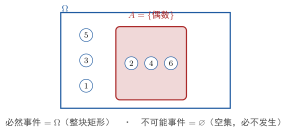

随机事件
一句话定义
随机事件是样本空间 的一个子集，记作 ；一次试验的结果落入 ，就说事件 发生。
定性
把”关心的情况”装进一个袋子。掷骰子，你未必在乎”到底是 2 还是 3”，你可能只关心”出现偶数”。而”出现偶数”落在样本空间 里，正好是 这一小撮——一个子集。这个子集，就是随机事件。它回答的是”这次结果落在我关心的那一撮里面没有”这类问题。
它像手持一张”中奖清单”。样本空间是全文品可能出现的全部结果，事件是你愿意给它打勾的那一撮。打勾的结果来了，事件就”发生”；没打勾的来了，事件就”没发生”。所以”随机”二字体现在：结果本身在跳、说不准，而你设的这条清单规则是固定的——规则不变，只是”这次中不中”随结果而变。
它在知识体系里的位置：随机事件是从样本空间通向概率的桥梁。样本空间是全集，事件是子集，概率是给每个子集标一个”发生的比重”。可以说，概率论日常对话里说的”某件事的概率”，说的都是”某个事件”的概率。没有事件这个载体，概率就没有着落的对象。
这里有个值得反复咀嚼的反直觉点：同一句话，有时是事件，有时不是，全看它在不在 内。比如”出现 7”，在点数口径的 里根本不存在，它不是这个样本空间里的事件——它永远不发生，是”不可能事件”；但如果把口径改成”允许出现的一切整数”（夸张点），“7”又是一个合法样本点。事件的合法性取决于它是否藏在 的管辖范围内。

图：样本空间 （矩形）中，“出现偶数”这一事件 是 的子集（涂色区域）； 本身是必然事件，空集是不 可能事件。结果 1、3、5 落在 外，即” 不发生”。
数学表达
设样本空间为 ，则随机事件 是 的子集：
事件与子集一一对应。特例三件： 本身是必然事件（每次必发生，因为结果总在 里）；空集 是不可能事件（永远不发生）；只含一个样本点 的是基本事件（最小的事件，对应一次确定结果）。
符号上要分清两层： 是单个结果（元素）， 是结果的一撮（集合）。""读作”结果 属于 “，意思是”这一次落在了我关心的范围内”，即事件发生。公式结构上，""这一条是核心——它把口语里模糊的”这件事发生了”，精确翻译成”试验结果落进这个集合”，语义毫无歧义。于是” 是否发生”变成为一个纯集合论问题： 与否。
关键性质
-
事件是”结果的一个子集”，而非一个结果。 为什么——单个结果 是元素，是最小单元；事件 是若干结果凑起来的一撮，可以单点（基本事件）、多点、乃至全集或空集。层级必须分清，否则必出错。
-
必然事件是 ，概率恒为 1。 为什么——因为试验必然产生一个落在 内的结果，毫无例外，所以 每次必发生，其”比重”是百分之百。这是概率论中”概率为 1”的天然来源。
-
不可能事件是 ，概率恒为 0。为什么——空集不含任何结果，试验结果不可能”落进”一个空的袋子，所以它永不发生，比重为零。注意这是”永不发生”，与”这次恰好没发生”截然不同。
-
事件可无限多，且可任意组合。 为什么—— 的子集可以有 个，基本事件、复合事件、并交补，种类繁多。凡由样本点”要不要划进来”决定的一个确定子集，都是合法事件，这保证了概率论能处理复杂情况。
推导
现在把”为什么事件可以精确等价于子集”亲手理出来——不是背诵，而是看清它与集合为何天然同构。
先抛一个问题：日常我们说”明天有雨”，这个说法含糊——是”雨小到毛毛”算，还是”倾盆”算？同一句话，一千个人有一千种判法。那概率论凭什么能对”下雨”算出个精确概率？
设物理（数学）场景。取”明天 24 小时内的降水”做观察口径，把明天所有可能的天气情况归拢进样本空间 （比如每个 代表一种具体的降水分布）。我现在给”下雨”这一句口语定一个明确的判据：凡是 里有任何降水，就算”下雨”。
列依据。依据是分子判定的确定性：只要判据定死了，任何一个 属于不属于”下雨”，是唯一的、无歧义的——是就挑进来，不是就剔出去。这就是集合论里”由属不属于决定子集”的办法。
逐步演绎。第一步，按判据把 里所有”含降水”的 收敛成一个子集 。第二步，“含降水”与否在 层面完全确定，所以 是唯一且清晰的，不因各人理解而变。第三步，称”下雨”这件事发生，等价于”实际出现的那个 落在 里”，即 。
回头看。结论有力：把口头说的”一件事”翻译成事件，本质就是给它设一条咬文嚼字的判据，再从 里圈出一个子集。一旦圈出子集，这件事就彻底不再含糊——它的发生与否变成纯集合判断 。正因如此，概率论才能对一个看似主观的句子给出精确的数学处理。模糊的话，通过”划子集”变成了确定的集合对象。
为什么重要
随机事件是概率论的语言中枢，重要性在三个方面立得很稳。其一，它是概率的直接对象：我们说的”某事的概率”，说的永远是某个事件 的概率 ，事件是概率赖以立足的载体。
其二，它是连通样本空间与概率的桥梁：事件把”集合”（）翻译成”语义”（我关心的事），又把”语义”交还给”占比”（概率）。没有它，样本空间只是抽象集合，概率只是抽象比重，两者无法对接成有血有肉的概率问题。
其三，它让复杂问题被拆解：抽检一只元件”合格”，拆成多个基本事件；一封信被错投，拆成若干互斥事件。复杂情形经事件化的拆解，才能套用加法、乘法公式算出整体概率——这是工程风险评估与统计推断的起点。不会划事件，概率题寸步难行；会划事件，再乱的问题都有了抓手。
适用条件
一个”情况”要成为合法的随机事件，须满足两条：
-
它必须是 的子集。 所关心的结果全都能在设定的样本空间里找到对应。若你关心”出 7”，而 ，则”出 7”不属于 ，不是本空间的事件。所以先有 ，再谈事件——口径不清，事件无从谈起。
-
判据必须明确、可判定。 任一 属不属于该事件，必须唯一确定，不能模棱两可（“约等于 3”就不合格）。判据含糊，事件就含糊，概率也算不实。
真实边界：事件是基于当前观察口径构造的。若口径取了”点数”，你只能谈点数口径下的事件；想谈”奇偶”，要么重建 ，要么把它当作 的一个子集（奇数的集合）来处理。事件的”合法域”始终被 框定，超出则视为该模型之外、另建模型。
边界与误区
最容易翻车的地方，是把”事件”与”结果""必然发生”混为一谈。逐个挖根因。
-
误区一：事件=单次结果。 根因：口语里常说”掷出 3 这件事”，于是以为事件就是结果。正确区别：单个结果 是基本事件 的正体，也只是众多事件之一；事件可以包含多个结果（如”偶数”含 2、4、6）。事件是”一撮结果”，不是”一个结果”，层级不同。
-
误区二：概率为 0 的事件=不可能事件。 根因：直觉上”概率为 0”就是”不会发生”，于是混同。正确区别：概率为 0 的事件（连续型中如”恰好取到 3.000……“）其概率为 0，但并非绝无可能发生；不可能事件 是压根不存在的子集，确定”永不发生”。二者在下标（样本空间）上是不同的：一个是可能样本点的子集，一个是空集。
-
误区三：把”某次没发生”当”不可能事件”。 根因：这一次骰子没出 6，就以为”出 6”不可能了。正确区别：某次恰好没发生，只是这次随机结果没落在该事件里；事件本身完全可能，且仍有其概率。可能与否，看的是”样本空间中是否含对应结果”，不是”这次出没出现”。
对照
最容易和”随机事件”混的是基本事件。二者只用一个关键差异就能分开：
基本事件是”一个结果”，随机事件是”一撮结果”（子集）。
基本事件 是样本空间里最小的事件，只含一个结果，不可再拆；随机事件 可以是任意子集，哪怕含千万个结果。基本事件必然也是随机事件，但远不是全部。一句话判断：问”这个结果是单一的那个吗”→ 基本事件；问”这一组结果合起来算不算一种情况”→ 随机事件。这个差异决定了——基本事件是”原子”，随机事件是”由原子拼成的任意聚合物”，概率论里真正的主角永远是后者。
例子
我们用手推一个完整的例子。
掷一枚骰子，。设事件 “点数不小于 4”，即 ；事件 “点数为偶数”，。现在掷一次，实际结果是 4。
一看结果 ，所以 发生；再验 ， 也发生。若掷出的是 1：， 不发生；， 也不发生；且结果 1 落在 内，是基本事件 发生。现在问”是必然事件吗”—— 不是必然事件，因为存在 1、2、3 让 不成立；只有 才是必然事件，任何结果都让它成立。
反推工程含义：设你检验某灯泡，样本空间是”点亮时长”的全体非负数，事件 “亮超过 1000 小时”。你关心 的概率，因为它直接决定质保承诺的风险。若 划得含糊（“亮得还算久”），概率根本算不准；划成” 小时”这个清晰子集，才能交到概率公式手里算。事件划得越准，概率算得越实——这就是”划子集”这一动作的工程分量。